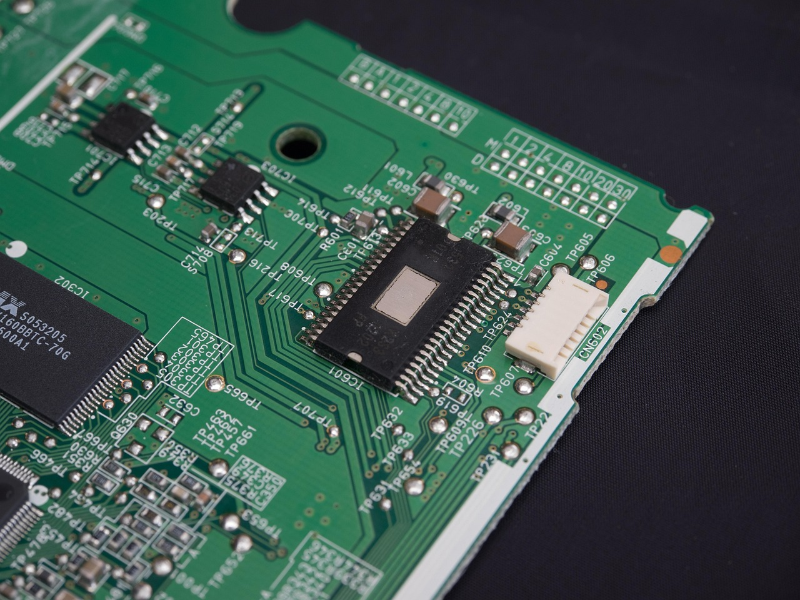

미중 회담 타협 불발, 삼성·하이닉스 득실 갈린다

미중 정상회담에서 반도체 분야 기술 수출통제 완화 합의가 없었음이 확인됐다. 미국의 대중 반도체 수출통제(EAR 규제)와 중국의 핵심광물 수출허가제가 동시에 유지된 채 양측이 현상 유지를 선택했다. 엔비디아·AMD의 중국향 AI칩 수출허가 의무화 방안도 철회 없이 추진 중이다.
삼성전자에는 이번 회담 결과가 단기적으로 유리하다. 트럼프 행정부가 애플에 중국산 YMTC 메모리 사용 중단을 공식 압박하는 가운데, 미중 기술 단절이 지속되면 YMTC·CXMT의 글로벌 시장 접근이 계속 차단된다. 삼성전자의 DDR5·LPDDR5X 대미 공급 구조는 당분간 안정적이다.
SK하이닉스는 다른 압박에 직면했다. HBM 시장에서 70% 이상 점유율을 보유한 SK하이닉스에 엔비디아 H200·B200 대량 수주 물량이 집중되고 있다. 납기 지연이나 수율 미달 시 엔비디아가 삼성전자로 물량을 분산하는 협상 카드를 쓸 수 있어, HBM 독점 포지션이 오히려 과도한 생산 목표 압박으로 작용한다.
전문가들은 미중 기술 갈등이 없었다면 중국 반도체가 5년 내 한국 턱밑까지 추격했을 것으로 분석한다. CXMT는 2025년 DDR5 양산을 선언했고, 실제 수율 데이터가 2026년 초부터 시장에 노출될 가능성이 있다. 미중 갈등이 한국에 제공해온 기술 유예 기간 안에 파운드리·메모리 경쟁력 격차를 좁히지 못하면, 미중 화해 시나리오에서 즉각 위협에 노출된다.
삼성전자와 SK하이닉스의 리스크 구조가 다르다. 삼성전자는 중국 메모리 배제 흐름에서 수혜를 보지만 파운드리 4nm 이하 수율 경쟁력이 TSMC 대비 여전히 뒤처진다. SK하이닉스는 HBM 독점에 따른 수익성은 높지만 엔비디아 단일 고객 의존 집중도가 60% 이상으로, 발주 사이클 변화에 극도로 민감하다.
미중 타협 불발이 한국에 선물처럼 보이지만 실제는 시간 압박이다. 기술 단절이 지속되는 동안 경쟁사 추격을 피할 수 있지만, 그 시간 동안 자체 기술 경쟁력을 올리지 못하면 화해 시나리오에서 즉각 노출된다. CXMT의 연산 능력은 이미 2024년 기준 월 40만 장 수준으로 성장했다.
단기 수혜는 SK하이닉스다. HBM3E·HBM4 양산 체제에서 엔비디아 수주 물량이 집중되며 2025년 하반기 영업이익률이 35~40%에 달할 전망이다. 엔비디아 차세대 칩 블랙웰 울트라(B300) 출시 일정과 맞물린 HBM4 수주 확보가 핵심 모멘텀이다.
삼성전자는 중기 수혜 포지션이다. YMTC 배제로 DDR5·LPDDR5X 글로벌 수요에서 한국 양사가 90% 이상 점유를 유지한다. 애플의 중국산 메모리 퇴출 압박이 현실화되면 삼성전자 모바일 DRAM 공급이 직접적인 수혜를 받는다.
중국 메모리 업체 YMTC·CXMT는 글로벌 시장 접근이 차단되지만, 내수를 내수로 흡수하며 기술력을 축적하는 패턴이 강화될 가능성이 높다. 미중 갈등 완화 시점에 한국 업체와의 격차가 예상보다 좁혀진 채로 등장할 리스크가 잠재한다.
한국 팹리스 업체들은 엔비디아·AMD AI칩 수출허가 의무화의 간접 피해자다. AI칩 허가 규제 강화가 한국 팹리스 설계 칩의 대중 수출 경로까지 복잡하게 만들 수 있으며, 스타트업 단계에서는 규제 컴플라이언스 비용이 사업 모델 자체를 위협한다.
삼성전자·SK하이닉스 투자자는 '미중 타협 없음' 지속 구간의 실적 모멘텀과 '미중 화해 시나리오' 시의 리스크를 분리해 봐야 한다. 2026년 이후 미중 무역 협상 재개 신호가 나오면 한국 메모리 프리미엄이 급격히 재평가될 수 있다.
공급망 전략가 입장에서 지금 가장 중요한 모니터링 지표는 CXMT의 DDR5 수율 데이터다. 2026년 초 CXMT 수율 데이터가 시장에 노출되는 시점이 한국 메모리 업체 주가의 중요한 전환점이 될 수 있다.
실제 조달 현장에서는 — 미중 긴장 지속 구간에서 글로벌 OEM 구매담당자들이 한국 메모리 업체에 이중 벤더 조건을 요청하는 빈도가 늘고 있다. 삼성·SK하이닉스 양사를 모두 납품처로 등록해 공급 리스크를 분산하는 방식인데, 이는 단기 물량 분산이지만 장기적으로는 CXMT가 해당 슬롯을 대체할 수 있는 진입 경로가 만들어지는 구조다. 한국 업체들이 이 분산 요구에 응할 때 최소 물량 보장 조건을 계약에 명시하지 않으면, 나중에 슬롯을 뺏기는 시나리오를 방어할 수단이 없다.
이 포스팅은 쿠팡 파트너스 활동의 일환으로 수수료를 제공받습니다.